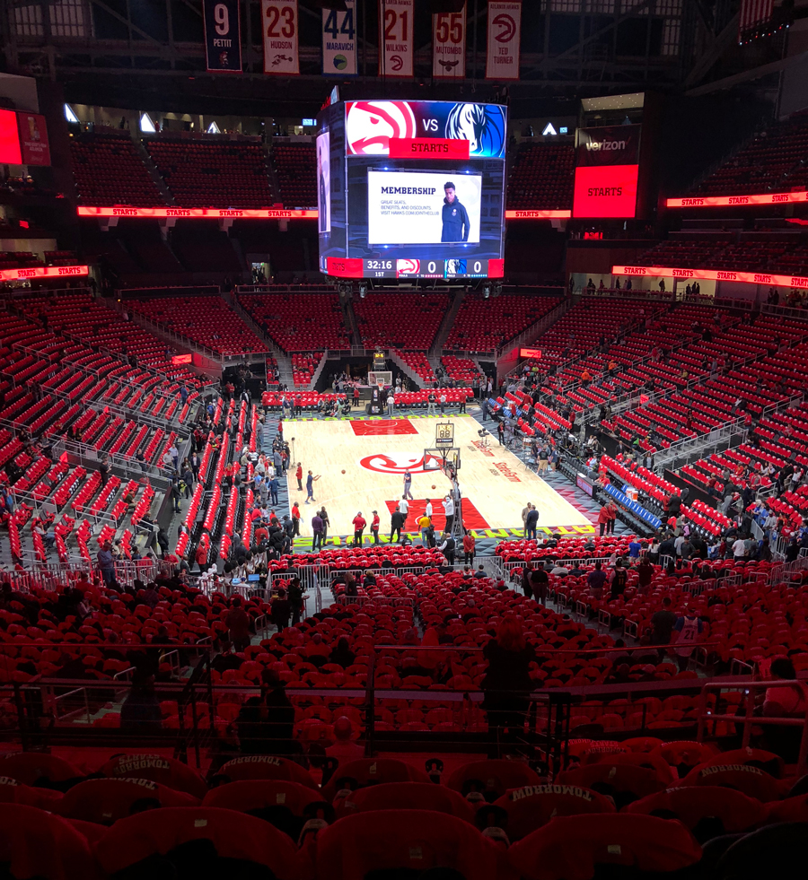

Atlanta Hawks - O Atlanta Hawks é uma equipe da NBA com uma longa história que começou em 1946 como Tri-Cities Blackhawks em Moline, Illinois. Depois de se mudarem para Milwaukee e, em seguida, para St. Louis, a equipe foi renomeada para St. Louis Hawks, onde conquistou seu único título da NBA em 1958, liderada por Bob Pettit.
Em 1968, os Hawks se mudaram para Atlanta, onde continuam até hoje. Embora a equipe tenha tido algumas estrelas ao longo dos anos, como Dominique Wilkins e Dikembe Mutombo, eles não conseguiram repetir o sucesso do campeonato de 1958. Nos últimos anos, os Hawks têm focado em uma reconstrução, com jovens talentos como Trae Young, buscando tornar o time competitivo novamente.
Elenco - Trae Young (#11), Dejounte Murray (#5), De’Andre Hunter (#12), Bogdan Bogdanović (#13), Clint Capela (#15), Jalen Johnson (#1), Onyeka Okongwu (#17), Saddiq Bey (#41).
Titulos NBA -1- (1958)
Titulos Confererncia -12- (1957, 1958, 1959, 1960, 1961, 1968, 1970, 1980, 1987, 1994, 2015 e 2021)
Estadio - State Farm Arena - (16.888)
